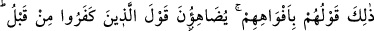

durumdan Allah Teâlâ’ya sığınırız! Haber; yani duymak gözle görmeye benzemez. Allah
Teâlâ’dan bizi hak ehline ulaştırmasını ve mukaddes topraklara eriştirmesini niyaz
ederiz.
Sonra Allah Teâlâ, hak ehline dünyayı ve dünya sevgisini de haram kılmıştır. Çünkü
“dünya sevgisi bütün günahların başıdır.”[125] Kâfirler gözlerini dünyaya dikip âhiret
yerine onu tercih ettikleri için onlara cizye konulmuştur. Nefs-i emmârenin cizyesi ise
onun tabiatı hilafına muamelede bulunmaktır. O ancak bu sayede şeriatın hükümleri ve
tarikatın âdâbı altında hakir ve zelil olur. İzzet ve devletin ruh tarafına geçmesi için
nefs-i emmâre ile cihad etmek ve onu kontrol altına almak gerekir.
Mesnevî’de denilir ki:
Firavun’da olan sende de vardır
Ancak senin ejderhan/nefsin, âcizlik kuyusuna düşmüş
Senin ateşine, Firavun’un ateşine atılan odun yoktur
Eğer Firavun gibi güçlü olsaydın, sen de çok canlar yakardın
İşte nefsin hali budur. Öyleyse dâvâsından ve kendisine üstünlük isnâdından
vazgeçinceye kadar onunla savaşmak gerekir. İşte o zaman nefis fânî olur, itmînâna
kavuşur, Allah’ın emrine teslim olur, boyun eğer ve hükmü altına girer.
30. Yahudiler: “Uzeyr, Allah’ın oğludur.” dediler. Hristiyanlar da: “Mesih,
Allah’ın oğludur.” dediler. Bu, onların ağızlarıyla geveledikleri sözleridir. (Bu
sözlerini), önceden inkar etmiş (olan müşrik)lerin sözlerine benzetiyorlar. Allah
onları kahretsin, nasıl da çevriliyorlar!?
“Yahudiler: “Uzeyr, Allah’ın oğludur.” dediler.” Seraya oğlu Uzeyr Yakub neslinden,
Levi oymağındandır. Soyu on dört batın sonra İmrân oğlu Hârun’a ulaşır. “Uzeyir,
Allah’ın oğludur.” sözünü, eski yahudiler söylemiştir. Sonra bu sona ermiştir. Allah
Teâlâ onların bu sözlerini Kur’ân’da anlatmıştır. Yahudilerin bunu inkar etmelerine
îtibar edilmez. el-Bahr adlı eserde: “Bir topluluk kendilerine uygun düşen bir hususun
onlardan bir kısmının yapması sebebiyle yerilir veya övülür.” denilmektedir.
Rivayet edildiğine göre Babilli Buhtunnasr İsrailoğulları’nı mağlup edince âlimlerini